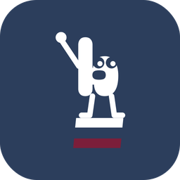
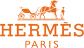
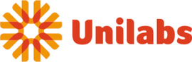
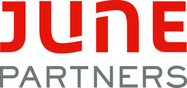
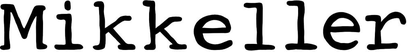

Conseil en IA pour les entreprises · Paris
L'IA au travail dans votre
Reportings, relances, saisies, comptes rendus : l'IA peut en alléger une bonne partie. Nous repérons où, installons les bons outils et formons vos équipes, pour qu'elles gagnent du temps et se concentrent sur ce qui compte.
- Un associé en face de vous
- Un créneau proposé sous deux jours ouvrés

- Données de ventes consolidéesFait
- Écarts au budget calculésFait
- Anomalies signaléesFait
- Commentaire de gestion rédigéRédigé
- Relecture et validationÀ vous
L'IA prépare, le métier valide. Les calculs suivent des règles contrôlées.
Nos parcours et nos références




En une minute
Ce que nous faisons, concrètement
Notre approche
Nous partons de votre besoin, pas de l'outil.
Avant de parler d'IA, nous regardons comment travaillent vos équipes, ce qui leur prend du temps et ce que vous voulez améliorer. L'IA vient ensuite, seulement là où elle sert vos métiers et le savoir-faire de vos équipes.
Du temps rendu aux équipes
Reportings, rapprochements, relances et premiers jets se préparent seuls. Vos équipes relisent et décident.
Des chiffres fiables, plus vite
Moins de ressaisies, des écarts signalés automatiquement, chaque chiffre relié à sa source.
Des équipes autonomes
Formées sur leurs propres tâches, elles savent quoi demander à l'IA et quoi vérifier. Sans dépendre de nous.
Notre offre
De l'audit à l'autonomie, en quatre temps
Confiez-nous tout le parcours, ou une seule étape.
Ce qui peut être automatisé
Nous observons les tâches réelles de chaque service : volumes, délais, irritants, outils et licences déjà payés.
Des choix clairs à valider
Usages prioritaires, outils, coût complet et critères de succès, présentés à la direction et à la DSI.
Un pilote qui tourne
Outils configurés, flux intégrés, tests sur vos cas réels et mesure avant / après, avant de généraliser.
Des usages au quotidien
Formation pratique par niveau, guide d'utilisation et suivi de l'adoption dans les semaines qui suivent.
Pour qui
Tous vos métiers, quel que soit votre secteur
Nous ne nous limitons pas à un pôle : le diagnostic part des tâches de votre organisation, service par service.
Par métier
Par secteur
Notre méthode
Cinq étapes, du diagnostic à l'autonomie
À chaque étape, vous savez ce que nous faisons et ce que vous obtenez. Confiez-nous tout le parcours, ou une seule étape : calendrier et budget sont fixés après le diagnostic.
- 1
Diagnostic
Nous observons le travail réel de chaque service : volumes, délais, irritants, outils et licences déjà payés.
La liste des tâches à alléger - 2
Recommandation
Nous retenons les usages les plus utiles, les outils adaptés, leur coût complet et les critères de succès.
Un plan chiffré - 3
Validation
Vous arrêtez avec nous, direction et DSI, le périmètre, le budget et les objectifs.
Une feuille de route validée - 4
Déploiement
Nous configurons les outils sur un premier processus, testons sur vos cas réels et mesurons avant / après.
Un pilote qui tourne - 5
Formation
Nous formons vos équipes sur leurs vrais dossiers, laissons un guide et suivons l'adoption.
Des équipes autonomes
Formation
Trois niveaux, sur vos propres cas
Pas de cours théorique : chaque séance part des tâches que vos équipes font déjà. La formation peut se prendre seule, sans projet de déploiement. Le détail de nos formations.
Découvrir
Comprendre ce que l'IA sait faire, et ce qu'elle ne sait pas faire.
- Bien formuler une demande
- Vérifier une réponse
- Règles de confidentialité
Pratiquer
Intégrer l'IA aux tâches de chaque jour.
- Synthèses, comptes rendus, e-mails
- Analyse de tableaux et d'écarts
- Assistants adaptés à votre métier
Automatiser
Enchaîner les tâches sans intervention.
- Reportings qui se préparent seuls
- Relances et rapprochements
- Contrôles et validation humaine
Exemples d'application
Deux exemples parmi d'autres
L'IA s'applique à presque chaque service. Voici deux cas que nous connaissons bien, pour donner une idée concrète ; chez vous, le diagnostic fera apparaître les vôtres. L'IA en finance et contrôle de gestion.
Gestion d'une PME commerce ou services
Vécu : création et gestion d'une entreprise, avec mise en place puis automatisation du reporting, des clôtures et des stocks.
- Reporting de l'activité
- Consolider les ventes, calculer les écarts, rédiger un premier commentaire.temps de préparation, corrections, délai de diffusion
- Achats et stocks
- Rapprocher ventes, achats et inventaires, signaler les écarts, préparer les commandes à valider.temps d'inventaire, écarts, ruptures
- Clôture
- Collecter et classer les pièces, suivre les manquants, préparer la synthèse.pièces manquantes, temps de clôture
Pilotage budgétaire d'une grande direction
Vécu : suivi d'un budget de 66 M€ pour la direction du Digital d'une grande institution financière.
- Budget et prévisions
- Consolider réalisé, engagé et prévisionnel, calculer les écarts, préparer le commentaire.temps de consolidation, délai du reporting
- Dépenses
- Rapprocher commandes, consommations et imputations, faire remonter les incohérences.anomalies détectées, temps de résolution
- Comités de pilotage
- Préparer le support de synthèse en reliant chaque chiffre à sa source.temps de préparation, demandes de reprise
L'équipe
Deux entrepreneurs, à la croisée du business, de la finance et de l'IA

Marie
ENTREPRENEURE · FINANCE · OPÉRATIONSDiplômée de Paris-Dauphine, fondatrice de Mikkeller Bar Paris : elle en a piloté le financement, l'ouverture et la structuration, et l'activité tourne aujourd'hui en gestion déléguée.
Elle a aussi accompagné Hermès, Unilabs, Aurore Market et Save sur des enjeux de finance et de transformation, et pilote le budget Digital de Bpifrance (66 M€).
Aloïs
ENTREPRENEUR · CONSEIL · STRATÉGIEDiplômé de l'EDHEC. Il a fondé et dirigé une start-up média incubée à Station F, puis a été consultant chez June Partners (restructuration, transactions, pilotage de la performance).
Chez Prisma Media, il a dirigé le M&A et la Stratégie du groupe (plus de 10 opérations), avant d'y prendre la direction business d'une activité.
Nous formons aussi une équipe de consultants aux usages de l'IA, pour intervenir à leur tour chez nos clients. Vous êtes consultant indépendant et cela vous intéresse ? Rejoignez-nous.
Nos engagements
Ce que vous pouvez attendre de nous
Nous mesurons avant, puis après le pilote, et nous distinguons le temps libéré des économies réelles.
Les calculs suivent des règles contrôlées. Chaque chiffre et chaque commande sont validés par un responsable.
Accès et outils sont définis avec votre DSI. Nous travaillons uniquement sur des données autorisées.
Guide, formation et passation : l'objectif est que vos équipes n'aient plus besoin de nous.
Vos questions
Comment se passe le premier rendez-vous ?
En visio ou par téléphone, avec l'un de nous deux. Vous nous décrivez votre organisation, vos besoins et les tâches qui prennent le plus de temps ; nous voyons ensemble par où commencer.
Faut-il déjà avoir des outils d'IA ?
Non. Le diagnostic recense ce que vous avez déjà (logiciels, licences, compétences) ; souvent, une partie des besoins se couvre avec l'existant.
Nos données restent-elles chez nous ?
Les accès, les outils et les données utilisées sont définis avec votre DSI avant le pilote. Nous travaillons uniquement sur des données autorisées.
Combien de temps dure une première mission ?
Elle commence par un diagnostic ciblé, puis un pilote sur un seul processus. La durée et le budget sont fixés ensemble après le diagnostic.
Promettez-vous un gain chiffré ?
Pas avant de l'avoir mesuré. Nous fixons une mesure initiale avec vous, puis nous comparons après le pilote.
Intervenez-vous dans les petites structures ?
Oui. Une PME a souvent les gains les plus rapides : peu de personnes, beaucoup de tâches répétées, et des décisions qui se prennent vite.
Premier échange
Parlons de votre projet.
Racontez-nous en quelques lignes votre organisation et ce qui vous prend du temps. Nous vous proposons un créneau sous deux jours ouvrés.
- Un associé en face de vous, pas un commercial
- Un créneau proposé sous deux jours ouvrés
- En visio ou par téléphone